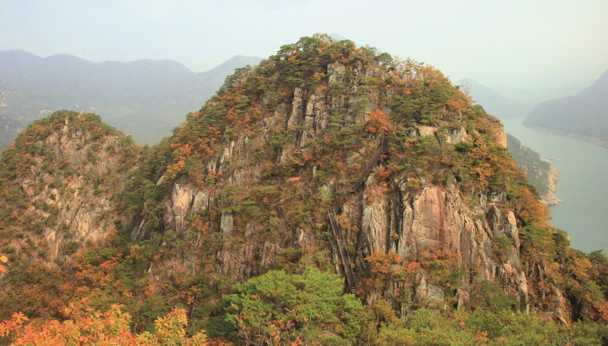

계란재공원지킴터~삼거리~옥순봉 정상코스(2.3km, 1시간 소요, 편도)
단양8경, 제천10경 두 군데 모두 속해있는 절경 중에 절경, 옥순봉
- 계란재에서 시작하여 삼거리까지 오르막을 오르면 충주호가 보이며 좌측으로 내려가면 옥순봉 정상에 다다른다.
- 옥순봉 정상에서 충주호를 바라보는 경관이 정말 일품이며 국립공원사진전에 항상 출품 되는 포토포인트 이다.

계란재공원지킴터~삼거리~구담봉 정상코스(2.0km, 1시간 소요, 편도)
조선시대 문인(文人)들도 반해 버린 기암괴석! 월악산국립공원 대표 경관, 옥순봉
- 계란재에서 시작하여 삼거리까지 오르막을 오르면 충주호가 보이며 우측으로 오르막 내리막을 반복하면 구담봉
정상에 다다른다.
- 오르는 내내 펼쳐지는 충주호와 주변 풍경이 정말 일품이다.


- 